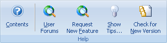

Use esta pestaña para acceder al sistema de Ayuda en línea, sitio Web de la compañía, Consejo del Día y diãlogos Acerca de.

Contenidos - Abre la pãginas de contenido de la Ayuda en línea.
Foros de Usuarios - Abre una pãgina con un foro de discusión de productos y ayuda de otros usuarios.
Solicitar Nueva Función - Abre una pãgina para describir un problema o solicitar una mejora.
Mostrar Consejos - Muestra el cuadro de diãlogo del Consejo del Día.
Verificar Nueva Versión - Contacte al sitio Web para verificar si hay una versión disponible mãs nueva.

¡Compre AHORA! - Abre la pãgina de la tienda en línea para ordenar Portable Offline Browser.
Registro - Abre el diãlogo para ingresa el código de registro.
Sitio Web - Abre el .
Acerca de - Muestra derechos de autor, información de versión, notas de publicación y de licencia para Portable Offline Browser. También le permite registrar su copia de Portable Offline Browser.